Chungungo · La Higuera · Región de Coquimbo
Uno de los ecosistemas marinos más ricos del Pacífico Sur, frente a la costa de Coquimbo. Y una fundación que quiere construir ahí un museo de arte.
Conoce el ArchipiélagoEs uno de los ecosistemas marino-costeros más biodiversos del Pacífico Sur. Tres razones.
Especies endémicas y redes tróficas que sostienen la pesca artesanal de la zona.
La corriente de Humboldt trae aguas frías y nutrientes: alta productividad primaria y un océano más sano.
Laboratorio natural para la investigación marina y territorio habitado por comunidades costeras desde hace generaciones.
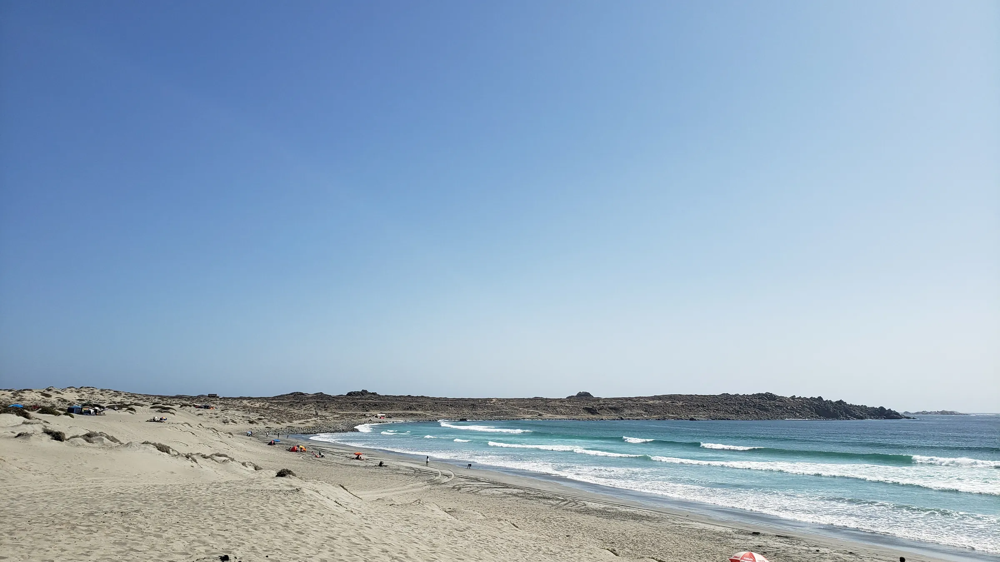
La Fundación Archipiélago de Humboldt trabaja para proteger este ecosistema y para levantar en Chungungo un museo de arte inspirado en él. El museo todavía no existe: estamos construyéndolo.
Los datos científicos informan; el arte mueve. Un museo convierte lo que sabemos del archipiélago en algo que se siente.
Instalaciones y obras participativas hacen comprensibles procesos ecológicos complejos, a cualquier edad.
La sobrepesca y el cambio climático se vuelven visibles, junto a las prácticas que los enfrentan.
Visitantes y residencias artísticas abren trabajo para artesanos, pescadores y guías de Chungungo.
Pingüinos de Humboldt, lobos marinos, chungungos, delfines y ballenas. Fotografías tomadas en el archipiélago y su costa.
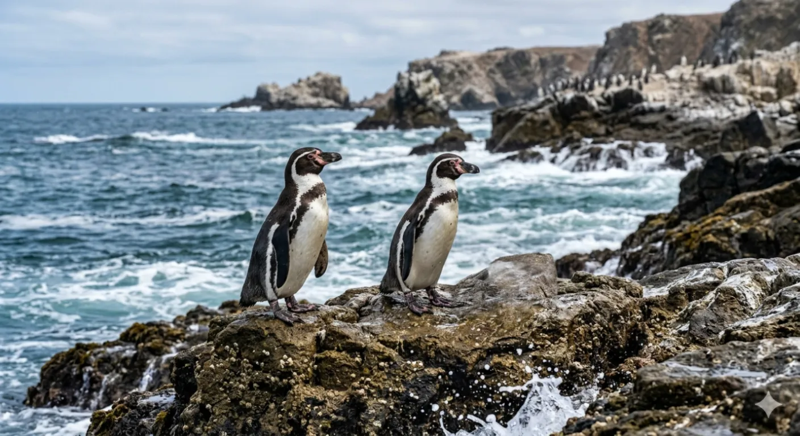
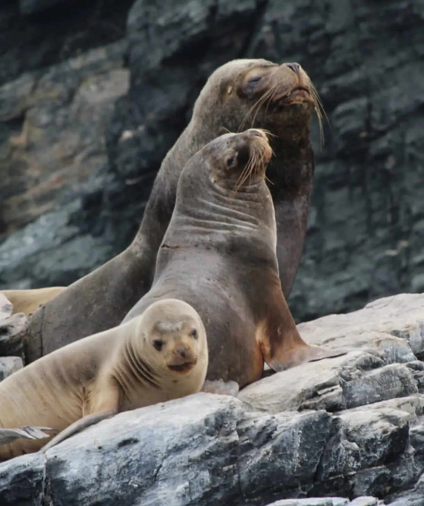
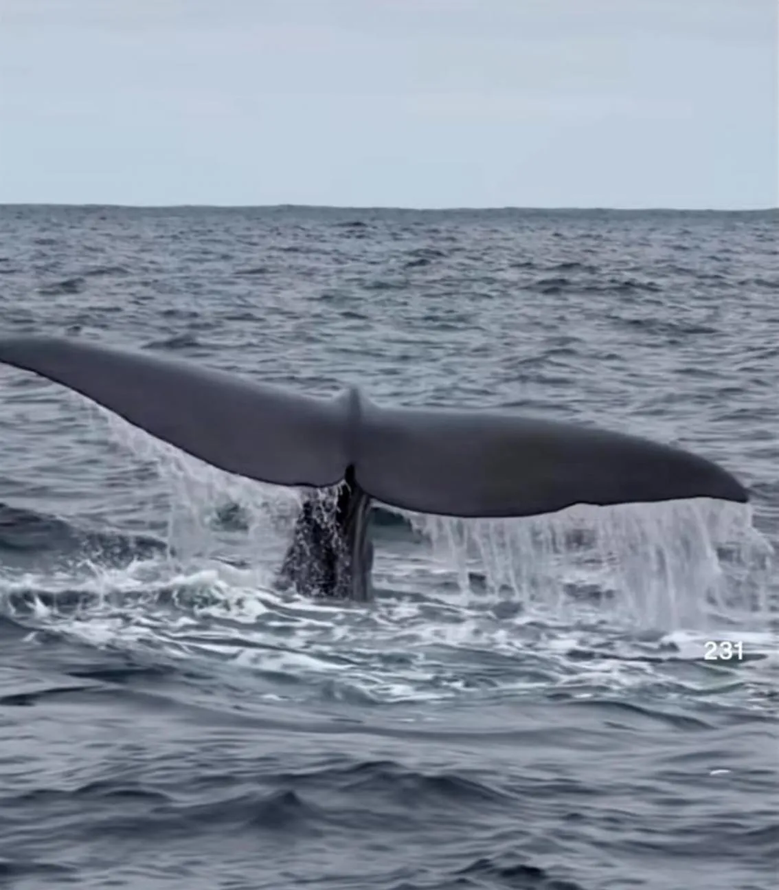
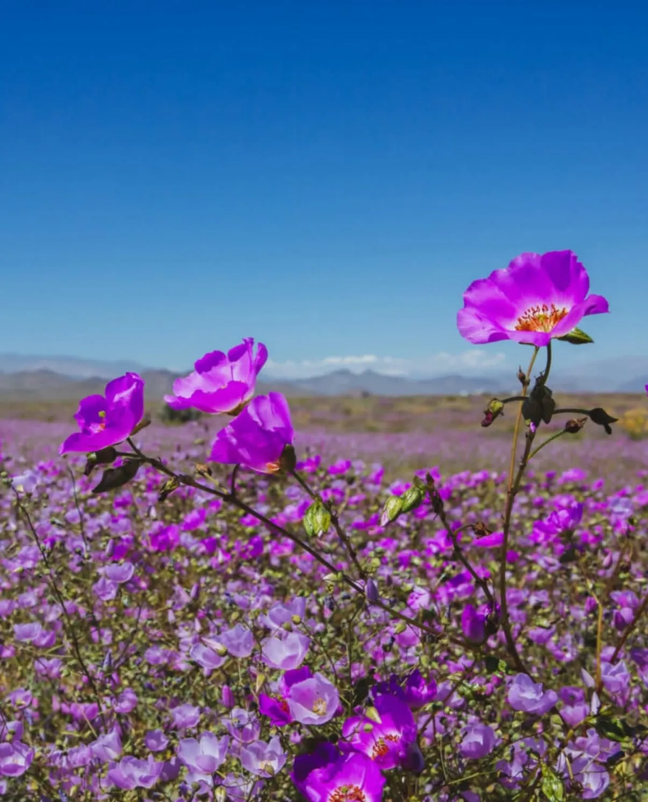
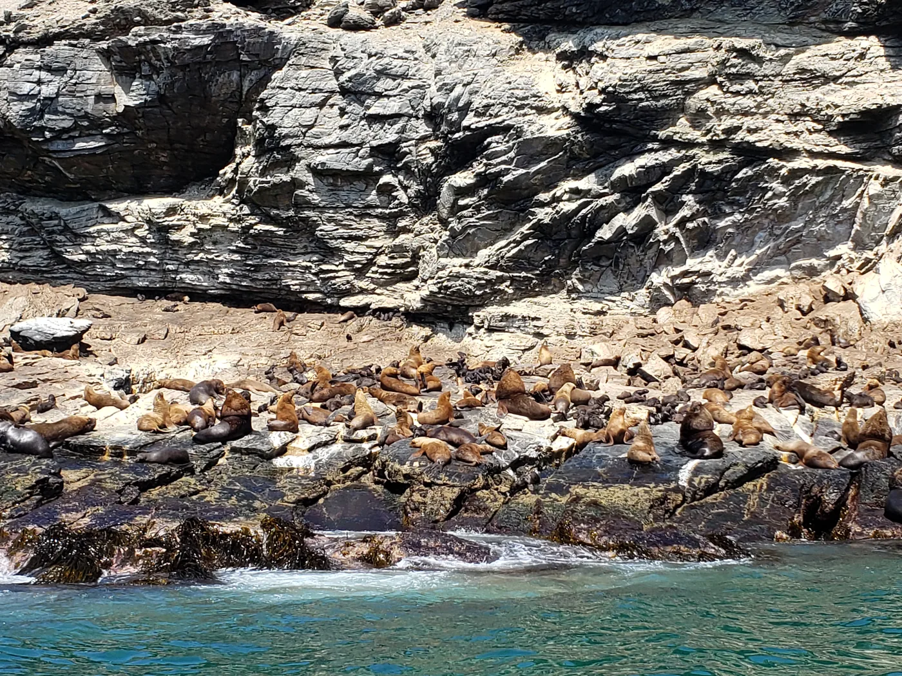
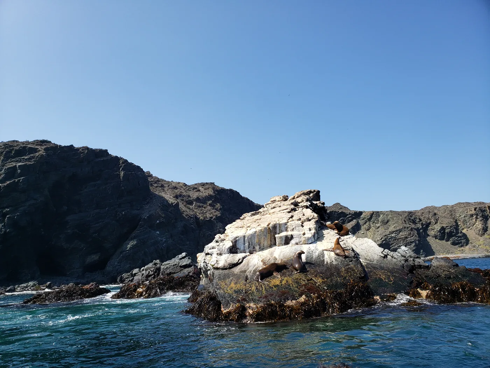
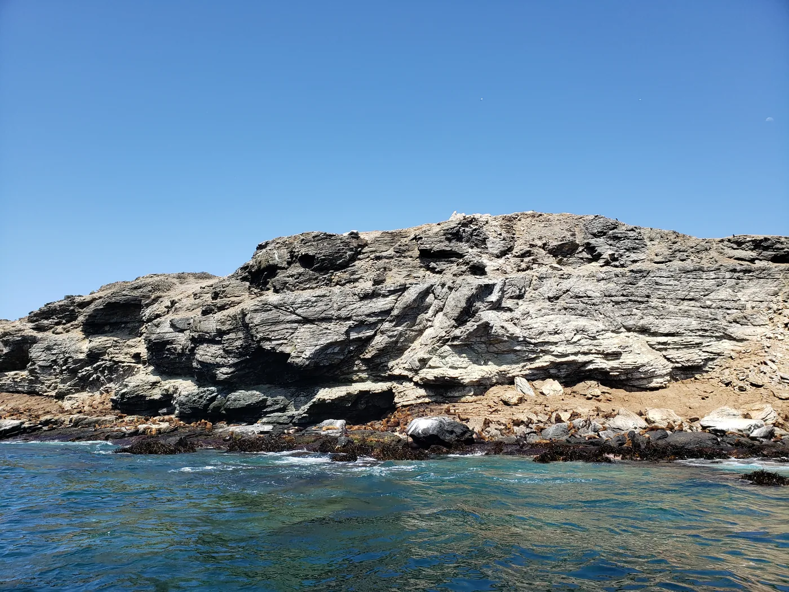
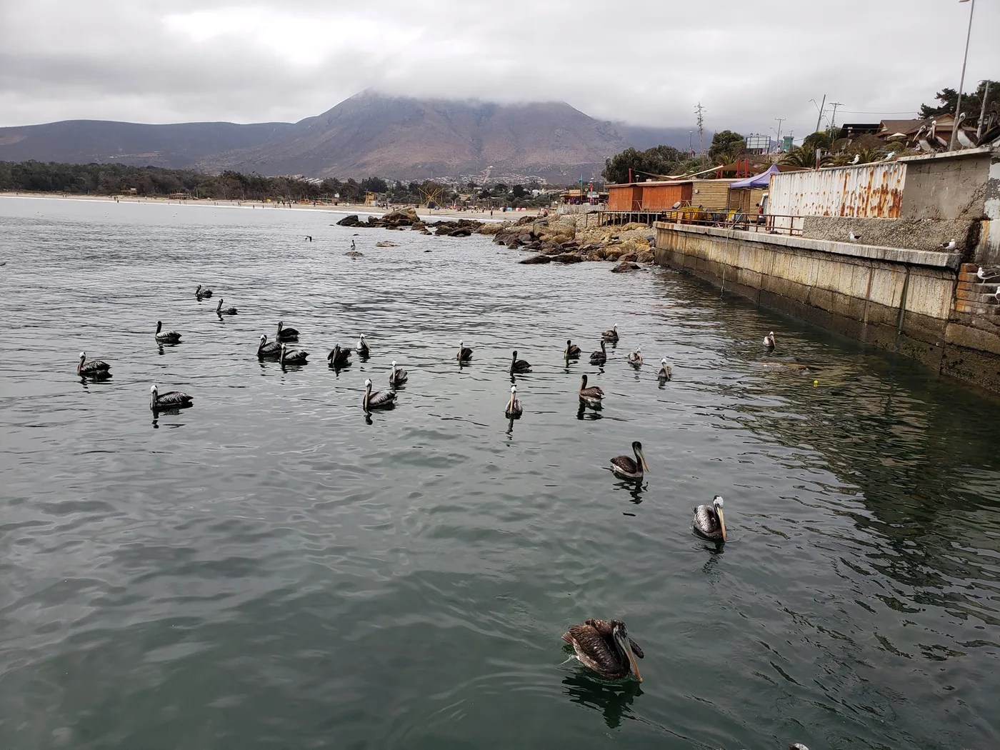
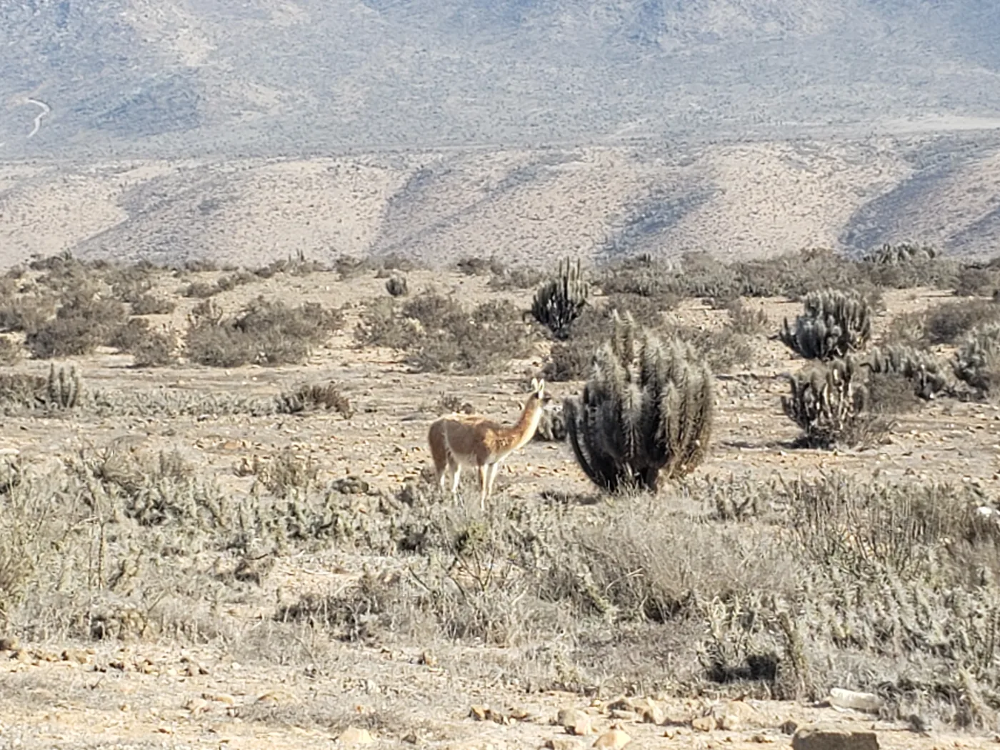
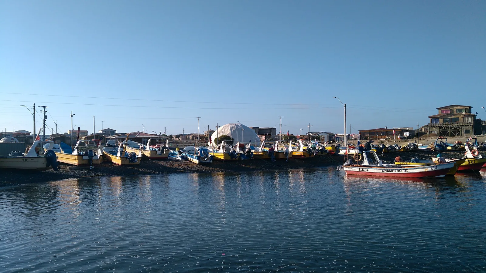
El museo está pensado como punto de encuentro entre tres grupos.
Cinco líneas de trabajo que queremos poner en pie. Ninguna está funcionando todavía.
El museo se levanta con aportes de quienes se interesan por este ecosistema. Puedes ser uno.
Ubicación
Chungungo, comuna de La Higuera
Región de Coquimbo, Chile
A 67 km al norte de La Serena por la Ruta 5 Norte, luego ruta costera hacia Chungungo.
Dudas, colaboraciones, programas educativos o residencias artísticas: